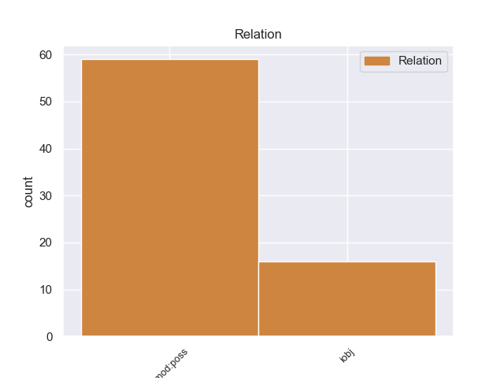
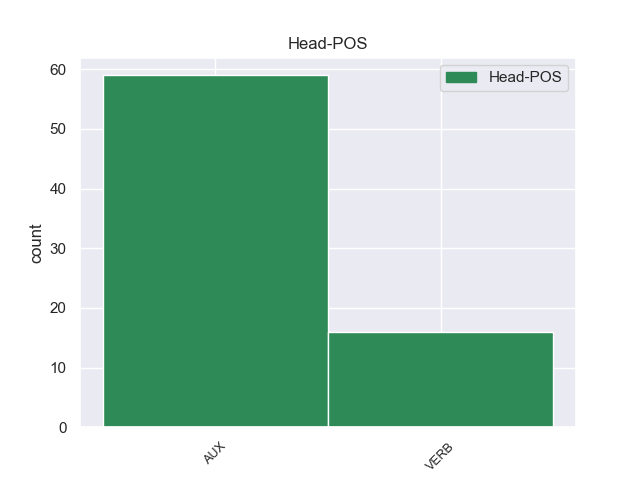
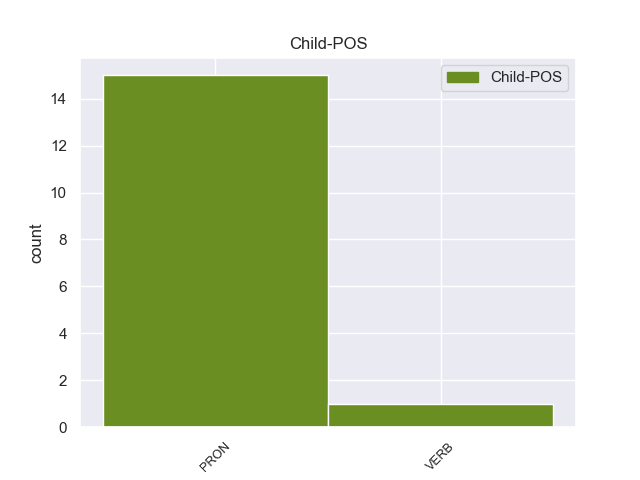

Distribution of features within this leaf



Agreement Rules sorted by frequency.
- When the dependent token is the possessive nominal modifier(nmod:poss) of the head token,
1 He _ _ _ _ 0 _ _ _
2 took _ _ _ _ 0 _ _ _
3 it _ _ _ _ 0 _ _ _
4 back _ _ _ _ 0 _ _ _
5 and _ _ _ _ 0 _ _ _
6 they _ _ _ _ 0 _ _ _
7 would _ _ _ _ 0 _ _ _
8 not _ _ _ _ 0 _ _ _
9 honor _ _ _ _ 0 _ _ _
10 a _ _ _ _ 0 _ _ _
11 warranty _ _ _ _ 0 _ _ _
12 and _ _ _ _ 0 _ _ _
13 said _ _ _ _ 0 _ _ _
14 it _ _ _ _ 0 _ _ _
15 was be AUX VBD Mood=Ind|Number=Sing|Person=3|Tense=Past|VerbForm=Fin 0 _ _ _
16 his he PRON PRP$ Gender=Masc|Number=Sing|Person=3|Poss=Yes|PronType=Prs 15 nmod:poss 17:nmod:poss _
17 fault _ _ _ _ 0 _ _ _
18 because _ _ _ _ 0 _ _ _
19 of _ _ _ _ 0 _ _ _
20 his _ _ _ _ 0 _ _ _
21 shoes _ _ _ _ 0 _ _ _
22 ?? _ _ _ _ 0 _ _ _
1 Yes _ _ _ _ 0 _ _ _
2 , _ _ _ _ 0 _ _ _
3 it _ _ _ _ 0 _ _ _
4 gives give VERB VBZ Mood=Ind|Number=Sing|Person=3|Tense=Pres|VerbForm=Fin 0 _ _ _
5 him he PRON PRP Case=Acc|Gender=Masc|Number=Sing|Person=3|PronType=Prs 4 iobj 4:iobj _
6 the _ _ _ _ 0 _ _ _
7 " _ _ _ _ 0 _ _ _
8 sun _ _ _ _ 0 _ _ _
9 rays _ _ _ _ 0 _ _ _
10 " _ _ _ _ 0 _ _ _
11 necessary _ _ _ _ 0 _ _ _
12 , _ _ _ _ 0 _ _ _
13 that _ _ _ _ 0 _ _ _
14 's _ _ _ _ 0 _ _ _
15 what _ _ _ _ 0 _ _ _
16 UVA _ _ _ _ 0 _ _ _
17 is _ _ _ _ 0 _ _ _
18 . _ _ _ _ 0 _ _ _
Disagree Examples:
1 I _ _ _ _ 0 _ _ _
2 guess _ _ _ _ 0 _ _ _
3 it _ _ _ _ 0 _ _ _
4 's _ _ _ _ 0 _ _ _
5 just _ _ _ _ 0 _ _ _
6 the _ _ _ _ 0 _ _ _
7 old _ _ _ _ 0 _ _ _
8 new _ _ _ _ 0 _ _ _
9 Arab _ _ _ _ 0 _ _ _
10 ' _ _ _ _ 0 _ _ _
11 Me _ _ _ _ 0 _ _ _
12 against _ _ _ _ 0 _ _ _
13 my _ _ _ _ 0 _ _ _
14 brother _ _ _ _ 0 _ _ _
15 , _ _ _ _ 0 _ _ _
16 me _ _ _ _ 0 _ _ _
17 and _ _ _ _ 0 _ _ _
18 my _ _ _ _ 0 _ _ _
19 brother _ _ _ _ 0 _ _ _
20 against _ _ _ _ 0 _ _ _
21 my _ _ _ _ 0 _ _ _
22 cousin _ _ _ _ 0 _ _ _
23 , _ _ _ _ 0 _ _ _
24 me _ _ _ _ 0 _ _ _
25 and _ _ _ _ 0 _ _ _
26 my _ _ _ _ 0 _ _ _
27 cousin _ _ _ _ 0 _ _ _
28 against _ _ _ _ 0 _ _ _
29 my _ _ _ _ 0 _ _ _
30 enemy _ _ _ _ 0 _ _ _
31 ' _ _ _ _ 0 _ _ _
32 , _ _ _ _ 0 _ _ _
33 or _ _ _ _ 0 _ _ _
34 ' _ _ _ _ 0 _ _ _
35 The _ _ _ _ 0 _ _ _
36 enemy _ _ _ _ 0 _ _ _
37 of _ _ _ _ 0 _ _ _
38 my _ _ _ _ 0 _ _ _
39 enemy _ _ _ _ 0 _ _ _
40 is be AUX VBZ Mood=Ind|Number=Sing|Person=3|Tense=Pres|VerbForm=Fin 0 _ _ _
41 my my PRON PRP$ Number=Sing|Person=1|Poss=Yes|PronType=Prs 40 nmod:poss 42:nmod:poss _
42 friend _ _ _ _ 0 _ _ _
43 ' _ _ _ _ 0 _ _ _
44 thing _ _ _ _ 0 _ _ _
45 going _ _ _ _ 0 _ _ _
46 on _ _ _ _ 0 _ _ _
47 again _ _ _ _ 0 _ _ _
48 . _ _ _ _ 0 _ _ _
1 83N _ _ _ _ 0 _ _ _
2 is be AUX VBZ Mood=Ind|Number=Sing|Person=3|Tense=Pres|VerbForm=Fin 0 _ _ _
3 my my PRON PRP$ Number=Sing|Person=1|Poss=Yes|PronType=Prs 2 nmod:poss 4:nmod:poss _
4 responsibility _ _ _ _ 0 _ _ _
5 . _ _ _ _ 0 _ _ _
1 I _ _ _ _ 0 _ _ _
2 'm _ _ _ _ 0 _ _ _
3 not _ _ _ _ 0 _ _ _
4 planning _ _ _ _ 0 _ _ _
5 to _ _ _ _ 0 _ _ _
6 get _ _ _ _ 0 _ _ _
7 involved _ _ _ _ 0 _ _ _
8 since _ _ _ _ 0 _ _ _
9 this _ _ _ _ 0 _ _ _
10 is be AUX VBZ Mood=Ind|Number=Sing|Person=3|Tense=Pres|VerbForm=Fin 0 _ _ _
11 your you PRON PRP$ Person=2|Poss=Yes|PronType=Prs 10 nmod:poss 12:nmod:poss _
12 deal _ _ _ _ 0 _ _ _
13 . _ _ _ _ 0 _ _ _
1 Let _ _ _ _ 0 _ _ _
2 me _ _ _ _ 0 _ _ _
3 know _ _ _ _ 0 _ _ _
4 if _ _ _ _ 0 _ _ _
5 this _ _ _ _ 0 _ _ _
6 is be AUX VBZ Mood=Ind|Number=Sing|Person=3|Tense=Pres|VerbForm=Fin 0 _ _ _
7 your you PRON PRP$ Person=2|Poss=Yes|PronType=Prs 6 nmod:poss 8:nmod:poss _
8 understanding _ _ _ _ 0 _ _ _
9 , _ _ _ _ 0 _ _ _
10 as _ _ _ _ 0 _ _ _
11 well _ _ _ _ 0 _ _ _
12 . _ _ _ _ 0 _ _ _
1 I _ _ _ _ 0 _ _ _
2 believe _ _ _ _ 0 _ _ _
3 we _ _ _ _ 0 _ _ _
4 are _ _ _ _ 0 _ _ _
5 to _ _ _ _ 0 _ _ _
6 some _ _ _ _ 0 _ _ _
7 extent _ _ _ _ 0 _ _ _
8 already _ _ _ _ 0 _ _ _
9 protected _ _ _ _ 0 _ _ _
10 with _ _ _ _ 0 _ _ _
11 " _ _ _ _ 0 _ _ _
12 Enron _ _ _ _ 0 _ _ _
13 " _ _ _ _ 0 _ _ _
14 proceeded _ _ _ _ 0 _ _ _
15 with _ _ _ _ 0 _ _ _
16 anything _ _ _ _ 0 _ _ _
17 , _ _ _ _ 0 _ _ _
18 but _ _ _ _ 0 _ _ _
19 EnronOnline _ _ _ _ 0 _ _ _
20 ( _ _ _ _ 0 _ _ _
21 TM _ _ _ _ 0 _ _ _
22 ) _ _ _ _ 0 _ _ _
23 , _ _ _ _ 0 _ _ _
24 etc. _ _ _ _ 0 _ _ _
25 just _ _ _ _ 0 _ _ _
26 affords afford VERB VBZ Mood=Ind|Number=Sing|Person=3|Tense=Pres|VerbForm=Fin 0 _ _ _
27 us we PRON PRP Case=Acc|Number=Plur|Person=1|PronType=Prs 26 iobj 26:iobj _
28 more _ _ _ _ 0 _ _ _
29 protection _ _ _ _ 0 _ _ _
30 . _ _ _ _ 0 _ _ _